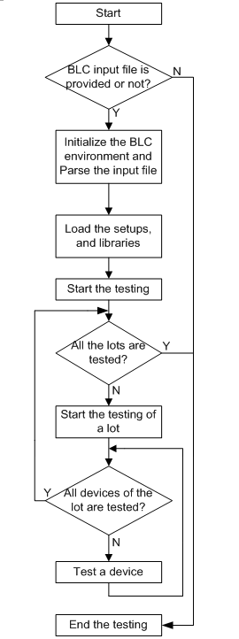

Example of issuing EDL events explicitly
This BLC example below provides the following functionalities:
- The level structure is maintained by issuing the EDL events explicitly with the IssueEDLEvent() API and the STDF data formatter can work with these events.
- The HVM events are issued either implicitly (whenever possible) or explicitly.
- The handler driver functions are called via the BLC APIs.
- The number of the lot and package is controlled either by a "for" loop or by the PH driver function ph_lot_done and ph_device_done.
The diagram below describes the test logic of the main() function in the example.

//header file
#include "xoc/hvmapi/hvmapi.hpp"
#include <string>
#include <iostream>
extern "C" {
#include <stdlib.h>
#include <unistd.h>
}
using namespace std;
using namespace xoc::hvmapi;
/**
* Function: cleanup()
*
* Description: Clear and reset the BLC execution environment.
* This function should be called before exiting
* the BLC execution
**/
inline void cleanup()
{
syncCommand("ResetBLCProfile", ParamList(), LOCAL_SESSION_ID);
}
/**
* Function: processStatus()
*
* Description: process the return status of each API call
* this function is called after the completion
* of each API
**/
inline void processStatus(Status &s)
{
if(s.isError())
{
cout<<"****************ERROR**************\n"
<<"Code:\"" <<s.code() << "\"\n"
<<"Text:\"" <<s.text() << "\"\n"
<<"***********************************"<<endl;
cleanup();
exit(1);
}
}
/**
* Function: checkPauseState()
*
* Description: check and respond to the SmarTest PAUSE state
**/
inline void checkPauseState()
{
ParamList inputParam, outputParam;
Status retVal;
retVal = query("IsPaused", outputParam, inputParam, LOCAL_SESSION_ID);
processStatus(retVal);
if(outputParam["IS_PAUSED"] == "TRUE")
{
//Issue the TESTPROGRAM_EXEC_PAUSED HVM event
inputParam.clear();
inputParam["EXECUTION_STATE"] = "TESTPROGRAM_EXEC_PAUSED";
inputParam["TESTPROGRAM_NAME"] = "BLC";
retVal = syncCommand("IssueHVMExecutionEvent", inputParam, LOCAL_SESSION_ID);
processStatus(retVal);
//Call the ph_pause_start PH driver function
inputParam.clear();
inputParam["FUNCTION_NAME"] = "ph_pause_start";
retVal = syncOperation("CallPHDriverFunc", outputParam, inputParam, LOCAL_SESSION_ID);
processStatus(retVal);
while(true)
{
//Enter a infinite loop until the PAUSE state is cleared
outputParam.clear();
retVal = query("IsPaused", outputParam, inputParam, LOCAL_SESSION_ID);
processStatus(retVal);
if(outputParam["IS_PAUSED"] == "FALSE") break;
}
//Call the ph_pause_done PH driver function
inputParam.clear();
inputParam["FUNCTION_NAME"] = "ph_pause_done";
retVal = syncOperation("CallPHDriverFunc", outputParam, inputParam, LOCAL_SESSION_ID);
processStatus(retVal);
//Issue the TESTPROGRAM_EXEC_RESUMED event
inputParam.clear();
inputParam["TESTPROGRAM_NAME"] = "BLC";
inputParam["EXECUTION_STATE"] = "TESTPROGRAM_EXEC_RESUMED";
retVal = syncCommand("IssueHVMExecutionEvent", inputParam, LOCAL_SESSION_ID);
processStatus(retVal);
}
}
/**
* Function: checkAbortState()
*
* Description: check the SmarTest ABORT and RESET state
**/
inline bool checkAbortState()
{
ParamList inputParam, outputParam;
Status retVal;
retVal = query("IsInterrupted", outputParam, inputParam, LOCAL_SESSION_ID);
processStatus(retVal);
if(outputParam["IS_INTERRUPTED"] == "TRUE")
{
return true;
}
else
{
return false;
}
}
/**
** Function: callAPhDriverFunc()
**
** Description: call a prober/handler driver function
**/
inline void callAPhDriverFunc(const string funcName)
{
ParamList inputParam, outputParam;
Status retVal;
inputParam.clear();
inputParam["FUNCTION_NAME"] = funcName;
retVal = syncOperation("CallPHDriverFunc", outputParam, inputParam, LOCAL_SESSION_ID);
processStatus(retVal);
}
/**
**Function: initializeBLC()
**
**Description: initialize the BLC
**/
inline void initializeBLC(int fileNum)
{
ParamList inputParam;
Status retVal;
//check if there are input file provided
if(fileNum<=1)
{
cout<<"Please sepecify a BLC input file!!!"<<endl;
cleanup();
exit(1);
}
//Initialize the BLC environment
cout<<">>>>>>>>>>Set BLC Profile"<<endl;
inputParam["TEST_TYPE"] = "PACKAGE_TEST";
inputParam["ENABLE_IMPLICIT_EVENT"] = "TRUE";
retVal = syncCommand("SetBLCProfile", inputParam, LOCAL_SESSION_ID);
if(retVal.isError() && retVal.text()=="the SmarTest state is not IDLE")
{
//if the current SmarTest state is not IDLE, clear up first
cleanup();
retVal = syncCommand("SetBLCProfile", inputParam, LOCAL_SESSION_ID);
processStatus(retVal);
}
}
/********************************
**Function:parseInputFile()
**
**Description: parse the input file
*********************************/
inline void parseInputFile(string fileName,string &phLib, string &phConfig, string &testflow,
string &eiLib,string &dbLib)
{
ParamList inputParam,outputParam;
Status retVal;
cout<<">>>>>>>>>>Parse the BLC input file:"<<fileName<<""<<endl;
inputParam.clear();
retVal = evalBLCInputFile(fileName, outputParam);
processStatus(retVal);
phLib = outputParam["PH_LIB"];
phConfig = outputParam["PH_CONFIG"];
testflow = outputParam["TESTFLOW"];
eiLib = outputParam["EI_LIB"];
dbLib = outputParam["DB_LIB"];
}
/*********************************
**Function:loadSetups()
**
**Description:load the device setups
*********************************/
inline void loadSetups(string testflow,string phLib,string phConfig,string eiLib,string dbLib)
{
ParamList inputParam;
Status retVal;
//Download the testflow
cout<<">>>>>>>>>>Download test flow:"<<testflow<<""<<endl;
inputParam.clear();
inputParam["TESTFLOW_NAME"] = testflow;
retVal = syncCommand("DownloadTestflowSync", inputParam, LOCAL_SESSION_ID);
processStatus(retVal);
//Load the Prober Handler Driver
cout<<">>>>>>>>>>Load the PH driver:"<<phLib<<""<<endl;
inputParam.clear();
inputParam["PH_DRIVER_LIB"] = phLib;
inputParam["PH_DRIVER_CONFIG_FILE"] = phConfig;
retVal = syncCommand("LoadPHDriverLib", inputParam, LOCAL_SESSION_ID);
processStatus(retVal);
//Load the execute input lib
cout<<">>>>>>>>>>Load the execute input lib:"<<eiLib<<""<<endl;
inputParam.clear();
inputParam["EXEC_INPUT_LIB"] = eiLib;
retVal = syncCommand("LoadExecInputLib", inputParam, LOCAL_SESSION_ID);
processStatus(retVal);
//Load the data bridge lib
cout<<">>>>>>>>>>Load the data bridge lib:"<<dbLib<<""<<endl;
inputParam.clear();
inputParam["DATA_BRIDGE_LIB"] = dbLib;
retVal = syncCommand("LoadDataBridgeLib", inputParam, LOCAL_SESSION_ID);
processStatus(retVal);
}
/************************************************
**Function:addVariables()
**
**Description:add variables to the shared memory
*************************************************/
inline void addVariables()
{
ParamList inputParam;
Status retVal;
inputParam.clear();
inputParam["VARIABLE_NAME"] = "Operator_id";
inputParam["VARIABLE_VALUE"] = "operator1";
retVal = syncCommand("SetApplicationVar", inputParam, LOCAL_SESSION_ID);
processStatus(retVal);
inputParam.clear();
inputParam["VARIABLE_NAME"] = "Tester_id";
inputParam["VARIABLE_VALUE"] = "tester1";
retVal = syncCommand("SetApplicationVar", inputParam, LOCAL_SESSION_ID);
processStatus(retVal);
inputParam.clear();
inputParam["VARIABLE_NAME"] = "STDF_FILE";
inputParam["VARIABLE_VALUE"] = "/home/demo/stdf/my_stdf_file";
retVal = syncCommand("SetApplicationVar", inputParam, LOCAL_SESSION_ID);
processStatus(retVal);
}
/**
**Function:issueEDLforLot()
**
**Description:issue the EDL event for lot level
**/
inline void issueEDLforLot(string eventName)
{
ParamList inputParam;
Status retVal;
inputParam.clear();
inputParam["EVENT_TYPE"] = eventName;
inputParam["LEVEL_TYPE"] = "CUSTOM_LEVEL";
inputParam["LEVEL_NAME"] = "lot";
retVal = syncCommand("IssueEDLEvent", inputParam, LOCAL_SESSION_ID);
processStatus(retVal);
}
/**
** Function: issueHVMforLot()
**
** Description: issue an HVM event for lot level
**/
inline void issueHVMforLot(string eventName,string lotID)
{
ParamList inputParam;
Status retVal;
inputParam.clear();
inputParam["EXECUTION_STATE"] = eventName;
inputParam["TESTPROGRAM_NAME"] = "BLC";
inputParam["OPERATOR_NAME"] = "operator1";
inputParam["LOT_ID"] = lotID;
retVal = syncCommand("IssueHVMExecutionEvent", inputParam, LOCAL_SESSION_ID);
processStatus(retVal);
}
/**
** Function: issueEDLforPackage()
**
** Description: issue an EDL event for package level
**/
inline void issueEDLforPackage(string eventName)
{
ParamList inputParam;
Status retVal;
inputParam.clear();
inputParam["EVENT_TYPE"] = eventName;
inputParam["LEVEL_TYPE"] = "DEVICE_LEVEL";
inputParam["LEVEL_NAME"] = "package";
retVal = syncCommand("IssueEDLEvent", inputParam, LOCAL_SESSION_ID);
processStatus(retVal);
}
/**
** Function: issueEDLforPackage()
**
** Description: issue an EDL event for package level
**/
inline void issueHVMforPackage(string eventName,string lotID,string siteID,
string siteSetup, string packageID)
{
ParamList inputParam;
Status retVal;
inputParam.clear();
inputParam["EXECUTION_STATE"] = eventName;
inputParam["LOT_ID"] = lotID;
inputParam["SITE_ID_FOR_SITES"] = siteID;
inputParam["SITE_SETUP_FOR_SITES"] = siteSetup;
inputParam["PACKAGE_ID_FOR_SITES"] = packageID;
retVal = syncCommand("IssueHVMExecutionEvent", inputParam, LOCAL_SESSION_ID);
processStatus(retVal);
}
/**
**Function:packageTest()
**
**Description:do the package test
**/
inline void packageTest(string lotID)
{
ParamList inputParam, outputParam;
Status retVal;
//Issue the device level start EDL event for STDF logging purpose
issueEDLforPackage("ApplModelLevelStartEventType");
/*********************
* Start the package *
*********************/
while(true)
{
//Issue the device level loop EDL event for STDF logging purpose
issueEDLforPackage("ApplModelLevelLoopEventType");
//Call the ph_device_start PH driver function
callAPhDriverFunc("ph_device_start");
//check if the operator interrupts the BLC execution
if(checkAbortState())
{
//leave the package loop
break;
}
//Query if the level_end index is set by the driver
outputParam.clear();
retVal = query("IsDeviceDone", outputParam, ParamList(), LOCAL_SESSION_ID);
processStatus(retVal);
//If all devices are finished, break the loop
if(outputParam["IS_DEVICE_DONE"] == "TRUE") break;
//update the header and subheader of the result display window
static int packageNum = 1;
char sPackageNum[10] = "";
sprintf(sPackageNum, "%d", packageNum);
inputParam.clear();
inputParam["HEADER"] = "PACKAGE TEST";
inputParam["SUBHEADER"] = string("PACKAGE#") + sPackageNum;
retVal = syncCommand("UpdateResultDisplay", inputParam, LOCAL_SESSION_ID);
processStatus(retVal);
//Set the package ID to something like 1.1, 1.2 etc.
inputParam.clear();
inputParam["PACKAGE_ID"] = sPackageNum;
retVal = syncCommand("SetPackageID", inputParam, LOCAL_SESSION_ID);
processStatus(retVal);
packageNum++;
//Get the site setup information in order to issue the PACKAGE_STARTED/PACKAGE_COMPLETED HVM events
outputParam.clear();
retVal = query("GetSiteSetup", outputParam, ParamList(), LOCAL_SESSION_ID);
string siteID = outputParam["SITE_ID_FOR_SITES"];
string siteSetup = outputParam["SITE_SETUP_FOR_SITES"];
string packageID = outputParam["PACKAGE_ID_FOR_SITES"];
processStatus(retVal);
//Issue the PACKAGE_STARTED HVM event
issueHVMforPackage("PACKAGE_STARTED",lotID,siteID,siteSetup,packageID);
/************************
* Execute the testflow *
************************/
//check if the operator interrupts the BLC execution
if(checkAbortState())
{
//leave the package loop before the testflow execution
break;
}
inputParam.clear();
retVal = syncCommand("ExecTestflowSync", inputParam, LOCAL_SESSION_ID);
processStatus(retVal);
//Check if the operator pauses the BLC execution
checkPauseState();
//Call the ph_device_done PH driver function
callAPhDriverFunc("ph_device_done");
//Issue the PACKAGE_COMPLETED HVM event
issueHVMforPackage("PACKAGE_COMPLETED",lotID,siteID,siteSetup,packageID);
}
}
/**
* Function: main()
*
* Description: the main function
**/
/**
* Function: main()
*
* Description: the main function
**/
int main(int argc, char* argv[])
{
ParamList inputParam, outputParam;
Status retVal;
string phLib,phConfig,testflow,eiLib,dbLib;
/**********************
* Initialize the BLC *
**********************/
initializeBLC(argc);
/***********************
* Parse the input file*
***********************/
parseInputFile(argv[1],phLib,phConfig,testflow,eiLib,dbLib);
/**********************
* Load all the setups*
**********************/
loadSetups(testflow,phLib,phConfig,eiLib,dbLib);
/********************************************
* Begin of the definition of the variables *
* Note: Variables can be defined anyware. *
* These variables can be accessed by *
* cpi call from the external program *
********************************************/
//Add new variables
addVariables();
/**************************
* Start the test control *
**************************/
cout<<">>>>>>>>>>Start the test control"<<endl;
//Call the ph_driver_start PH driver function
callAPhDriverFunc("ph_driver_start");
//Issue the lot level start EDL event for STDF logging purpose
issueEDLforLot("ApplModelLevelStartEventType");
/*****************
* Start the lot *
*****************/
for(int lotNum=1; lotNum<=1; lotNum++)
{
//Issue the lot level loop EDL event for STDF logging purpose
issueEDLforLot("ApplModelLevelLoopEventType");
//Call the ph_lot_start PH driver function
callAPhDriverFunc("ph_lot_start");
//Call the ph_get_id PH driver function
inputParam.clear();
outputParam.clear();
inputParam["FUNCTION_NAME"] = "ph_get_id";
inputParam["PARAMETER"] = "lot";
retVal = syncOperation("CallPHDriverFunc", outputParam, inputParam, LOCAL_SESSION_ID);
processStatus(retVal);
string lotID = outputParam["OUTPUT_STRING"];
//check if the operator interrupts the BLC execution
if(checkAbortState())
{
//leave the lot loop
break;
}
//Issue the LOT_STARTED HVM event
issueHVMforLot("LOT_STARTED",lotID);
/*****************************************
*****start package test******************
******************************************/
packageTest(lotID);
/*****************************************
* all the devices in a lot are finished *
*****************************************/
//Issue the device level end EDL event for STDF logging purpose
issueEDLforPackage("ApplModelLevelEndEventType");
//Call the ph_lot_done PH driver function
callAPhDriverFunc("ph_lot_done");
//Issue the LOT_COMPLETED HVM event
issueHVMforLot("LOT_COMPLETED",lotID);
inputParam.clear();
string sid = LOCAL_SESSION_ID;
inputParam["DEST_EDL_FILE"] = "/tmp/new_datalog_file.log";
retVal = syncCommand("MoveEDLStream", inputParam, sid);
if ( retVal.isError() )
{
cout<<"error code= " << retVal.code() << " description=" << retVal.text() << endl;
}
}
/*****************************
* all the lots are finished *
*****************************/
//Issue the lot level end EDL event for STDF logging purpose
issueEDLforLot("ApplModelLevelEndEventType");
//Call the ph_driver_done PH driver function
callAPhDriverFunc("ph_driver_done");
cout<<">>>>>>>>>End of the test control"<<endl;
/***********
* The end *
***********/
cleanup();
return 0;
}Functional changes
- Introduced in SmarTest 6.5.0